速览
用 CG 动角色时，装上骨骼（Skeleton）能相当方便地动。现实中普通运动物，基本上是根部动带动末端：例如手腕的位置由肩到肘、肘到手腕的运动决定，CG 世界称之为 FK（正向运动学）。反之，抓住手的位置移动，从而决定肩和肘角度的机制叫 IK（反向运动学）。总之编辑方便，也容易表现与地面的接触；他开始学 CG 时就有，历史相当长，是很基本的东西。另外，结构单元本身叫骨骼（Bone）或关节（Joint）。关于骨骼他想说的：也许很多地方已经实现，但可能对谁是启发，所以讲一下。关节可动极限当然是 180°——能不能让它弯得更过？即左边只能这样的，想表现成右边那样：为了让动画更有活力，超过笔直再弯。单纯能反向弯的骨骼恐怕会增加日常使用的困难，比如 IK 关节开始往预想的反方向弯。但正因为是 CG，也有想超出道理去夸张的时候。做成多关节或增加结构能做很多，但有处理负荷，动作设计师还需要卡通动画式的感觉，所以《大乱斗》等没能做到——开发初期提过，是未实现的课题之一。无论如何，动画的好处在超越常识之处，想不被框架束缚。这次以骨骼为例，类似的事应该还有很多：陷进既有的便利系统虽方便，却难以做出超出它的东西，不知不觉在脑中画下极限线。创作是自由的，想用各种点子突破极限。
1. 骨骼与 FK 0:03
用 CG 动角色时，装上骨骼就能相当方便地动。
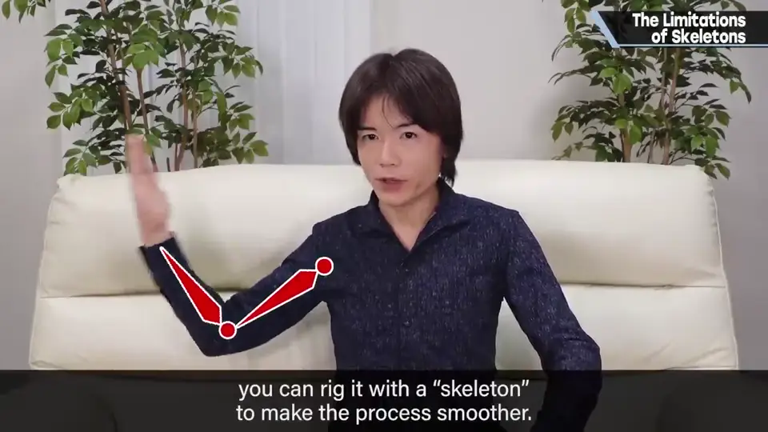
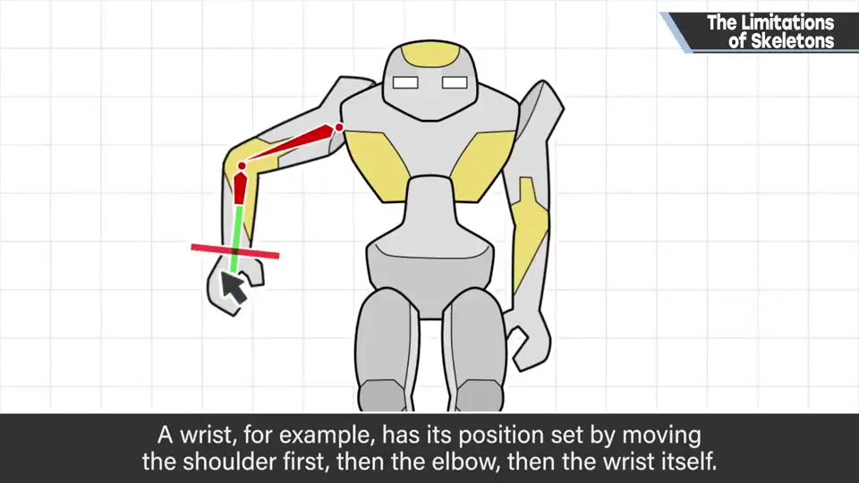
现实中普通运动物，基本上是根部动带动末端：例如手腕的位置由肩到肘、肘到手腕的运动决定。
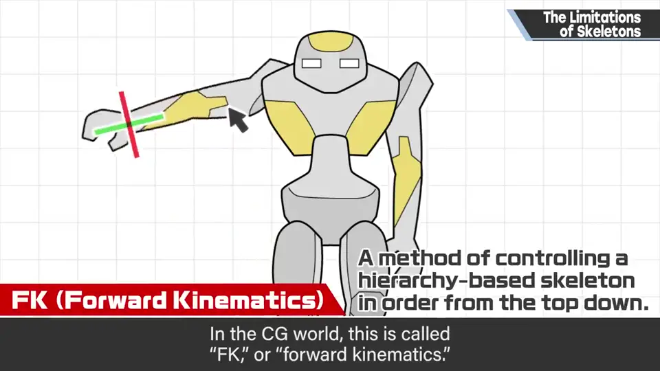
2. IK 0:37
反之，抓住手的位置移动，从而决定肩和肘角度的机制叫 IK（反向运动学）。
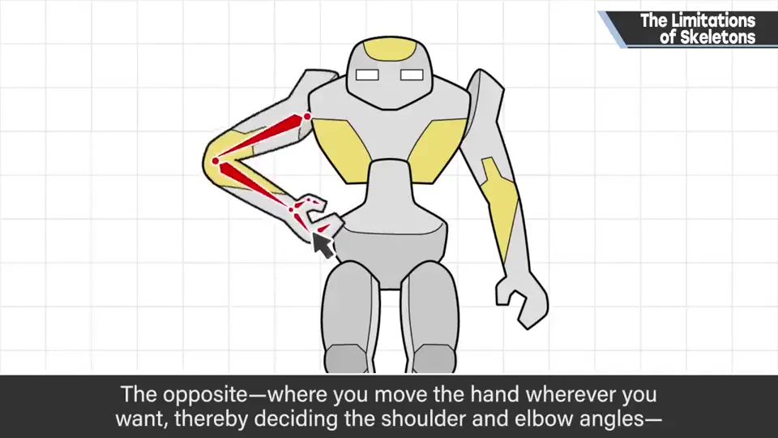
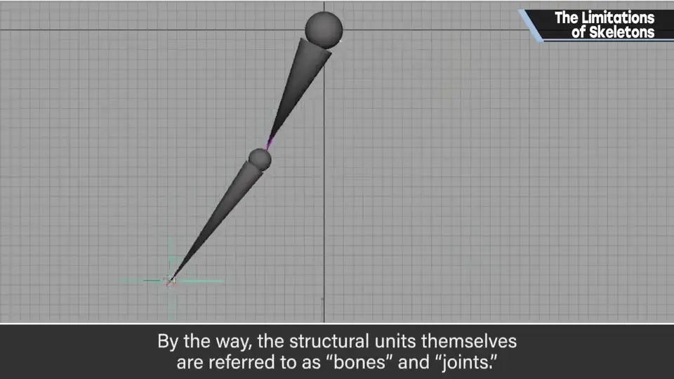
编辑方便，也容易表现与地面的接触。他开始学 CG 时就有，历史相当长，是很基本的东西。结构单元本身叫骨骼（Bone）或关节（Joint）。
3. 180° 的极限 1:16
关于骨骼他想说的：也许很多地方已实现，但可能对谁是启发。
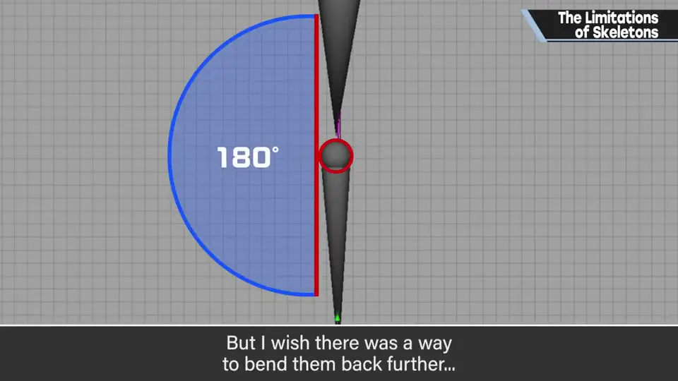
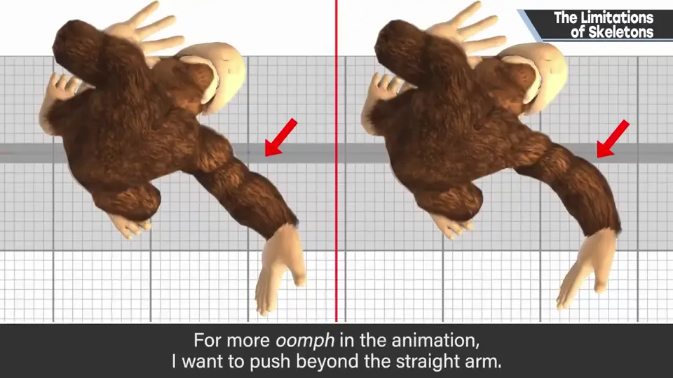
即左边只能这样的，想表现成右边那样：为了让动画更有活力，超过笔直再弯。
单纯能反向弯的骨骼，恐怕会增加日常使用的困难，比如 IK 关节开始往预想的反方向弯。
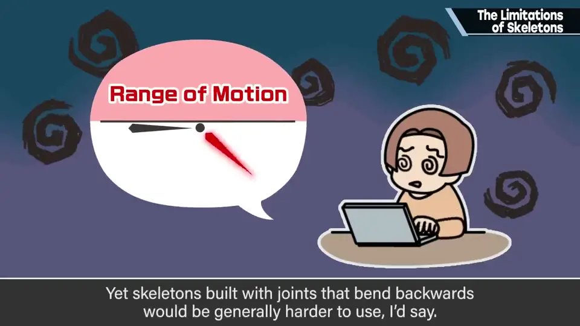
4. 为何未实现 2:02
但正因为是 CG，也有想超出道理去夸张的时候。做成多关节或增加结构能做很多事。
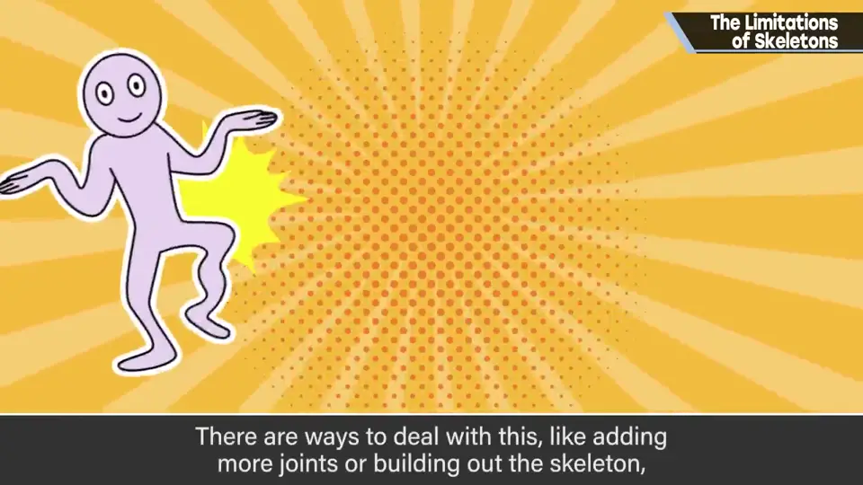
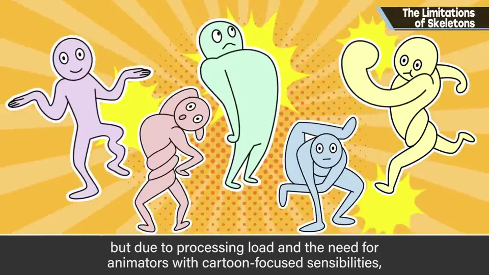
但有处理负荷，动作设计师还需要卡通动画式的感觉，所以《大乱斗》等没能做到。开发初期提过，是未实现的课题之一。
5. 别被框住 2:24
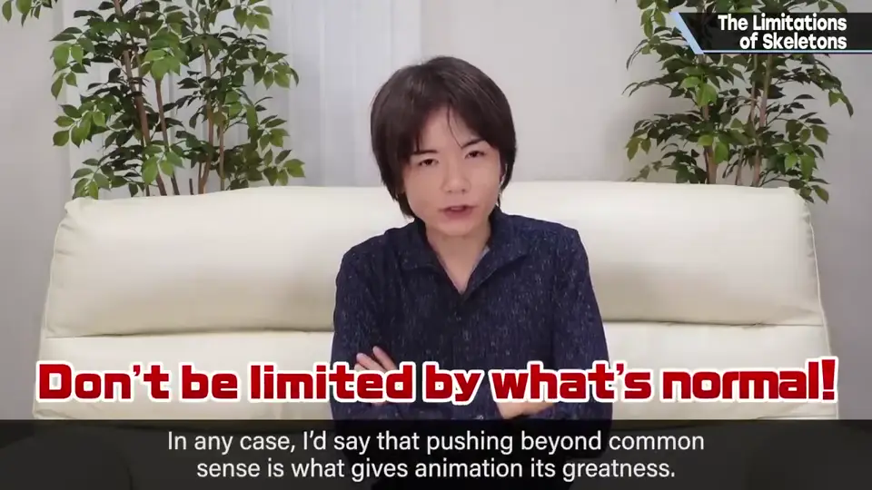
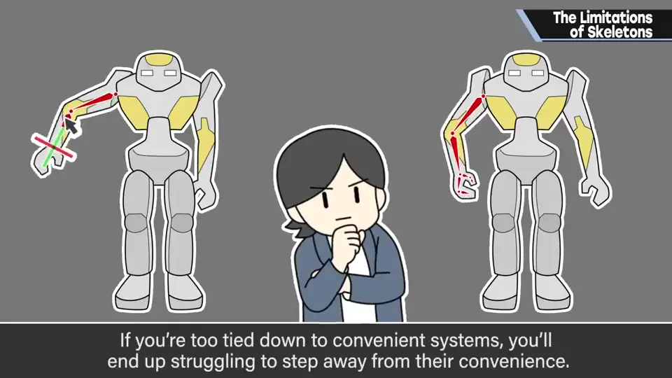
这次以骨骼为例，类似的事应该还有很多：陷进既有的便利系统虽方便，却难以做出超出它的东西，不知不觉在脑中画下极限线。
创作是自由的，想用各种点子突破极限。
自测题
1. FK 和 IK 的区别是什么？
FK 由根部依次带动末端；IK 拖动末端（手）位置，反算肩肘角度。 0:40
2. 樱井希望骨骼能做到什么？
超过 180°、弯过笔直，让动画更有活力。 1:35
3. 为什么《大乱斗》没实现？
处理负荷，以及需要动作设计师有卡通动画感；反向关节也会让日常使用困难。 2:15